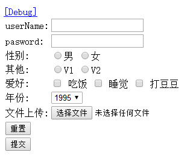

拦截器
-
struts2 是框架，封装了很多功能，里面封装的功能都是在拦截器里面
-
有很多的拦截器，不是所有的都执行，每次执行默认的拦截器
-
执行时间，Action对象创建之后，Action方法执行之前执行
-
struts2 默认拦截器的位置
struts核心包里面的struts-default.xml定义了默认的拦截器
<interceptors> <interceptor name="alias" class="com.opensymphony.xwork2.interceptor.AliasInterceptor"/> <interceptor name="autowiring" class="com.opensymphony.xwork2.spring.interceptor.ActionAutowiringInterceptor"/> <interceptor name="chain" class="com.opensymphony.xwork2.interceptor.ChainingInterceptor"/> <!-- ............ --> <interceptor-stack name="defaultStack"> <interceptor-ref name="exception"/> <interceptor-ref name="alias"/> <interceptor-ref name="servletConfig"/> <interceptor-ref name="i18n"/> <interceptor-ref name="prepare"/> <interceptor-ref name="chain"/> <interceptor-ref name="scopedModelDriven"/> <interceptor-ref name="modelDriven"/> <interceptor-ref name="fileUpload"/> <interceptor-ref name="checkbox"/> <interceptor-ref name="datetime"/> <interceptor-ref name="multiselect"/> <interceptor-ref name="staticParams"/> <interceptor-ref name="actionMappingParams"/> <interceptor-ref name="params"/> <interceptor-ref name="conversionError"/> <interceptor-ref name="validation"> <param name="excludeMethods">input,back,cancel,browse</param> </interceptor-ref> <interceptor-ref name="workflow"> <param name="excludeMethods">input,back,cancel,browse</param> </interceptor-ref> <interceptor-ref name="debugging"/> </interceptor-stack> <!-- ............ --> </interceptors> <!-- ............ --> <default-interceptor-ref name="defaultStack"/>拦截器原理及执行步骤
-
AOP思想:面向切面编程，不修改源代码来拓展功能
-
责任链模式
-
步骤
//执行Action execute.executeAction(request,response，map) ... //使用动态代理创建Action ActionProxy proxy = getContainer().getInstance(ActionProxyFactory.class).createActionProxy(namespace, name, method, extraContext, true, false); ... proxy.execute(); //执行很多的拦截器 if (interceptors.hasNext()) { ... } //放行 return invocation.invoke();
过滤器和拦截器的区别
过滤器：理论上可以过滤任意内容，比如 html、jsp、servlet、图片路径
拦截器：只可以拦截Action
自定义拦截器
struts里面的拦截器不能满足需求时，可通过自定义拦截器来实现
-
extends AbstractInterceptor
AbstractInterceptor 实现了Interceptor接口
有init,destroy，intercept方法，intercept被AbstractInterceptor复写为抽象的，必须要实现 其他两个用哪个就复写哪个
-
extends MethodFilterInterceptor
在开发中一般使用这个，因为它可以定义Action中的那些方法不要拦截
其实第一种方式也可以实现，不过要用反射
实现自定义拦截器
-
自定义拦截器
public class LoginInterceptot extends MethodFilterInterceptor { @Override protected String doIntercept(ActionInvocation invocation) throws Exception { boolean flag = false; //invocation.getStack() //invocation.getInvocationContext().getParameters() HttpServletRequest request= (HttpServletRequest)invocation.getInvocationContext().get(StrutsStatics.HTTP_REQUEST); HttpServletRequest req = ServletActionContext.getRequest(); //String key = req.getParameter("key"); ..... if (flag) { //放行 return invocation.invoke(); }else{ //到action的配置中很据结果找页面 return "login"; } } } -
配置与Action的关联
在package标签里面声明拦截器
在具体的action标签里面声明要使用的拦截器
注意：如果在action中定义了拦截器，那么系统默认的拦截器将不会执行，所以要做下面的配置
<package name="testdemo" extends="struts-default" namespace="/"> <interceptors> <interceptor name="checklogin" class="com.day01.LoginInterceptot"></interceptor> <interceptor-stack name="mydefault"> <interceptor-ref name="checklogin" > <!-- 配置不拦截的方法 --> <param name="excludeMethods">login,other</param> </interceptor-ref> <!-- 加上默认的拦截器 --> <interceptor-ref name="defaultStack" /> </interceptor-stack> </interceptors> <action name="test" class="com.day01.Test"> <result name="success">/WEB-INF/test.jsp</result> </action> <action name="login" class="com.day01.Login"> <result name="success">/WEB-INF/login.jsp</result> <!-- 使用拦截器 --> <interceptor-ref name="mydefault" /> </action> </package>
标签库
使用需要在jsp中引入标签库<%@ taglib uri="/struts-tags" prefix="s"%>
常用标签
property:和ognl配合在jsp中显示值栈中的数据
iterator：获取值栈list集合数据
debug：查看值栈结构和数据
a:超链接
if:if...
表单标签
见下面的使用例子
<%-- 指定修饰的样式，默认是表格<s:form theme="simple"> --%>
<%-- 默认时提交到当前页面 --%>
<s:form>
<s:textfield name="name" label="userName"></s:textfield>
<s:password name="password" label="pasword"></s:password>
<s:radio list="#{'man':'男','woman':'女'}" name="sex" label="性别"></s:radio>
<s:radio list="{'V1','V2'}" name="other" label="其他"></s:radio>
<s:checkboxlist list="{'吃饭','睡觉','打豆豆'}" name="love" label="爱好"></s:checkboxlist>
<s:select list="{1995,1996,1997}" name="year" label="年份"></s:select>
<s:file name="file" label="文件上传"></s:file>
<s:hidden name="hidden" value="123"></s:hidden>
<s:reset value="重置"></s:reset>
<s:submit value="提交"></s:submit>
</s:form>
显示效果:

转换后的html
<form id="test" name="test" action="/day01/test.action" method="post">
<table class="wwFormTable">
<tbody>
<tr>
<td class="tdLabel"><label for="test_name" class="label">userName:</label></td>
<td class="tdInput"><input type="text" name="name" value="" id="test_name"></td>
</tr>
<tr>
<td class="tdLabel"><label for="test_password" class="label">pasword:</label></td>
<td class="tdInput"><input type="password" name="password" id="test_password"></td>
</tr>
<tr>
<td class="tdLabel"><label for="test_sex" class="label">性别:</label></td>
<td class="tdInput">
<input type="radio" name="sex" id="test_sexman" value="man"><label for="test_sexman">男</label>
<input type="radio" name="sex" id="test_sexwoman" value="woman"><label for="test_sexwoman">女</label>
</td>
</tr>
<tr>
<td class="tdLabel"><label for="test_other" class="label">其他:</label></td>
<td class="tdInput">
<input type="radio" name="other" id="test_otherV1" value="V1"><label for="test_otherV1">V1</label>
<input type="radio" name="other" id="test_otherV2" value="V2"><label for="test_otherV2">V2</label>
</td>
</tr>
<tr>
<td class="tdLabel"><label for="test_love" class="label">爱好:</label></td>
<td class="tdInput">
<input type="checkbox" name="love" value="吃饭" id="test_love-1"> <label for="test_love-1" class="checkboxLabel">吃饭</label>
<input type="checkbox" name="love" value="睡觉" id="test_love-2"> <label for="test_love-2" class="checkboxLabel">睡觉</label>
<input type="checkbox" name="love" value="打豆豆" id="test_love-3"> <label for="test_love-3" class="checkboxLabel">打豆豆</label>
<input type="hidden" id="__multiselect_test_love" name="__multiselect_love" value="">
</td>
</tr>
<tr>
<td class="tdLabel"><label for="test_year" class="label">年份:</label></td>
<td class="tdInput">
<select name="year" id="test_year">
<option value="1995">1995</option>
<option value="1996">1996</option>
<option value="1997">1997</option>
</select>
</td>
</tr>
<tr>
<td class="tdLabel"><label for="test_file" class="label">文件上传:</label></td>
<td class="tdInput"><input type="file" name="file" value="" id="test_file"></td>
</tr>
<tr style="display: none;">
<td colspan="2"><input type="hidden" name="hidden" value="123" id="test_hidden"></td>
</tr>
<tr>
<td colspan="2"><div class="formButton"><input type="reset" value="重置"></div></td>
</tr>
<tr>
<td colspan="2"><div class="formButton"> <input type="submit" value="提交" id="test_2"> </div></td>
</tr>
</tbody>
</table>
</form>